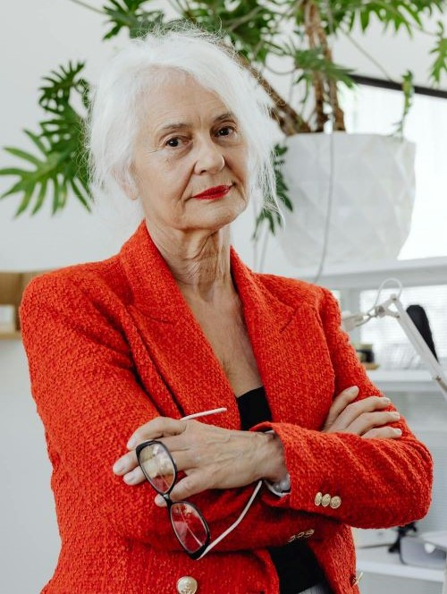

MEET OUR ATTORNEYS
Samantha Will
Samantha Will is the head attorney of the law firm of Will, Powers, and L'Estat and has been practicing law for over 30 years! She graduated with honors from Harvard University and has gone on to get her doctorate in elder law. She primarily helps clients with their plans to live a happy, comfortable life for the rest of their days.
Richard Powers
Richard Powers will be the attorney you'll be working with to write up the majority of your documents. He graduated from Yale and specializes in the creation of documents such as Power of Attorney, Last Will and Testament, and Living Wills.

Todd L'Estat
Todd L'Estat has been working at the law firm of Will, Powers and L'Estat for 5 years and has been practicing elder law for a total of 15 years. He has the most experience with working with clients to plan their estates and providing a stress free experience for their loved ones to fulfill their wishes after death. L'Estat has graduated from Brigham Young University and plans to go on to get his doctorate.